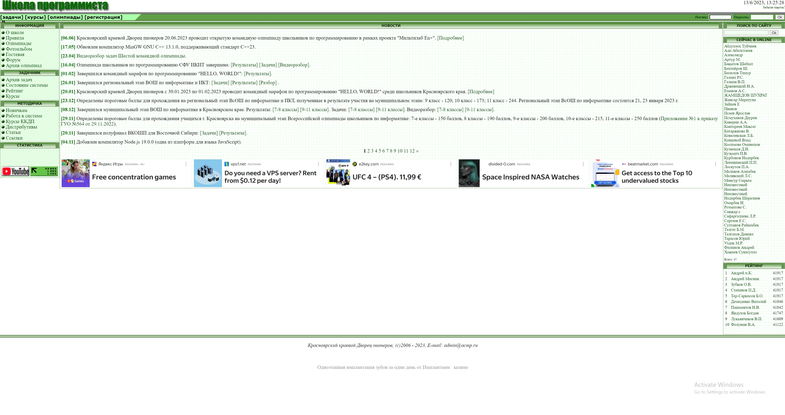
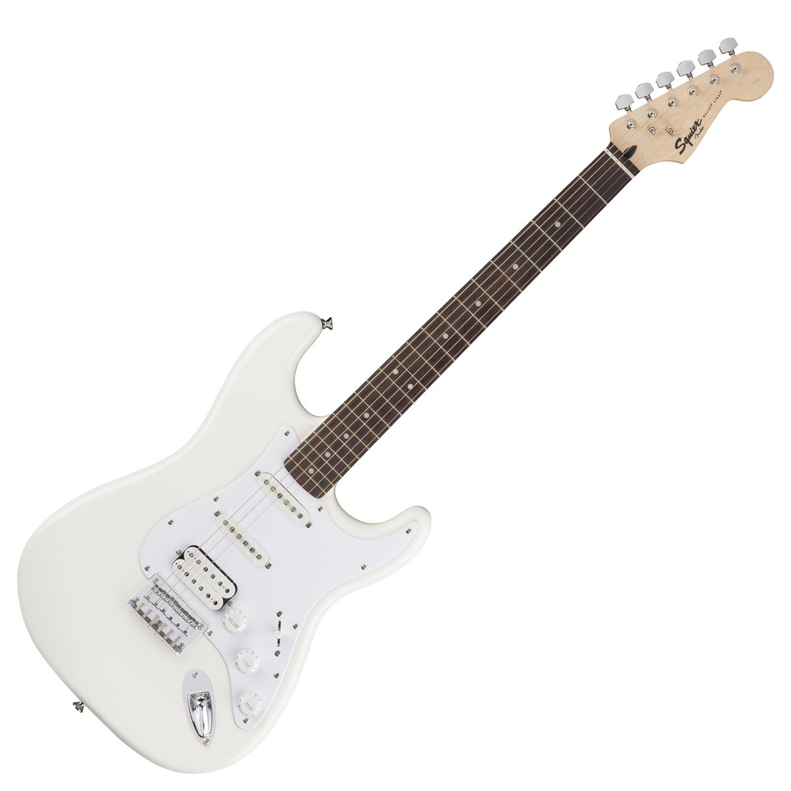

Hello! I'm Alex
About me
Hi, I'm Alex, this is my blog. I'm to do more programming and write about it here.
I haven't made my choice of studying doing dos games, games with unity or websites
because I don't know what I'm most intereste in. I also play the guitar and maybe will post something about it
My interests

Computer science 🖥
I'm interested in learning something about computers, old games, old websites, how everything works, etc
Guitar 🎸
I like to learn music that I like, so that's what I'm doing for of the time. The song that I'm currently learning is Paranoid.
I've been working on it since October, but still not there yet. Guess I'll need to switch to something and then come back.
My hobbies


Programming
I do python programming, like solving problens with it, want to find a way of using it
Guitar
I've played the guitar for about 2.5 years, got my first electric guitar in November. I hope to improve my skills this summer, but, again, I never know what to do